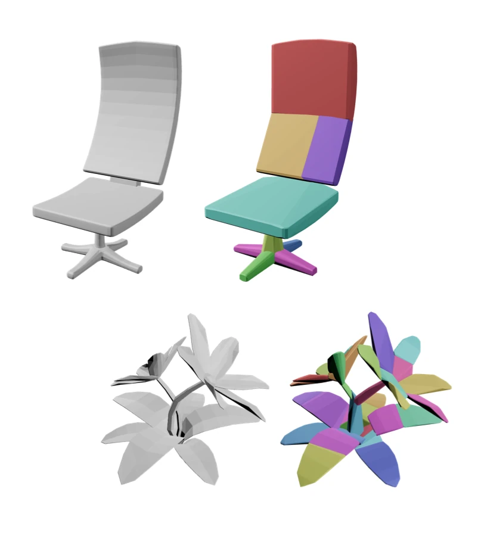
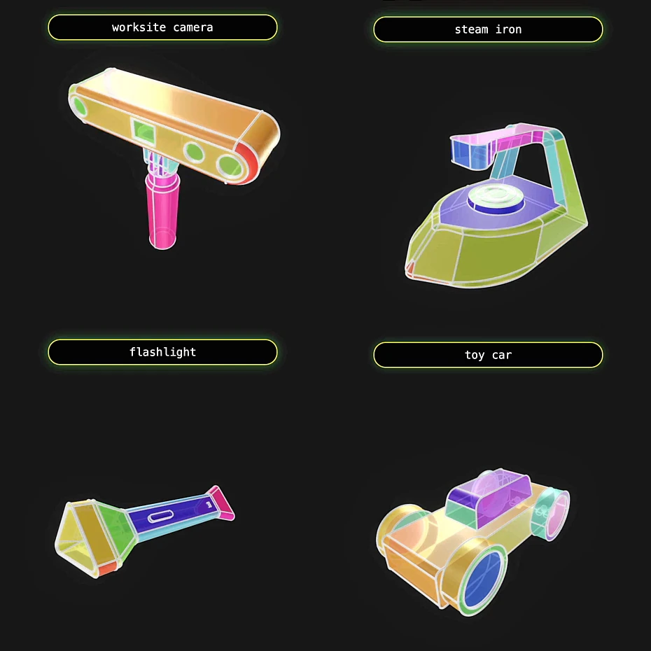
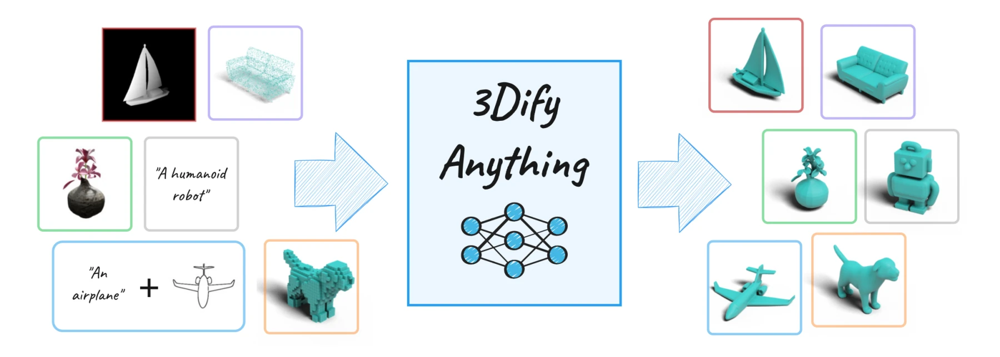
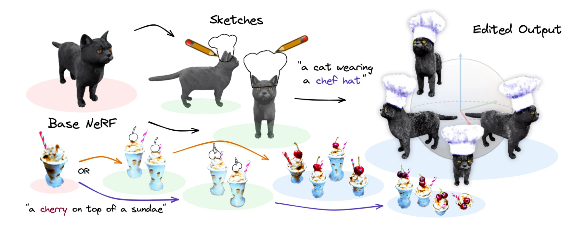
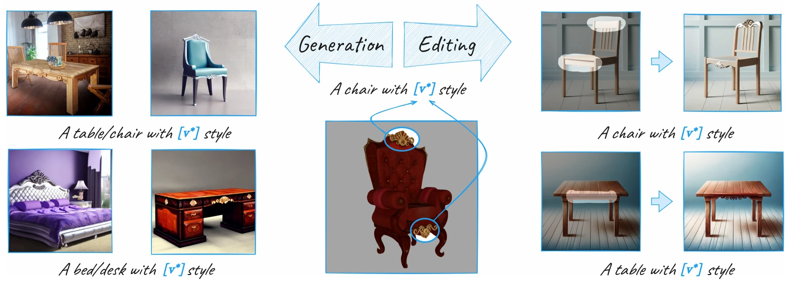

I am a Senior Machine Learning Engineer at Autodesk Research and a PhD student in Computer Science at the University of British Columbia under Professor Leonid Sigal and Professor Andrea Tagliasacchi. My interests include computer vision, generative AI, and physical simulations.
Prior to this, I completed my master's degree in Computer Science at Simon Fraser University, working with Professor Ali Mahdavi-Amiri and Professor Daniel Cohen-Or on concept learning in diffusion models and 3D editing using Neural Radiance Fields. Before that, I earned my bachelor's degree in Computer Engineering at Amirkabir University of Technology, with a particular focus on hardware acceleration for AI.





Experience
Research and engineering work across generative AI, vision, geometry, and data systems.
May 2026 - PresentVancouver, Canada
University of British Columbia
Research Assistant / PhD Student
Full-time PhD student
Researching computational geometry methods for improving AI-based physical simulations.
Sep 2024 - PresentVancouver, Canada
Autodesk
Senior Machine Learning Engineer
Full-time through Apr 2026 · Part-time since May 2026
Working on CAD generation using generative AI.
Researching efficient methods for autoregressive 3D generation.
Designing data pipelines for large-scale data preprocessing.
Developing scalable workflows for large-scale model training.
Feb 2024 - Aug 2024Vancouver, Canada
Pacific Laboratory for AI, University of British Columbia
Research Engineer
Worked on a large-scale data acquisition project using Minecraft for embodied AI research.
Jan 2022 - Apr 2024Burnaby, Canada
GrUVi (Graphics+Vision) Lab, Simon Fraser University
Research and Teaching Assistant
Researched diffusion models and generative AI for 3D geometry.
Collaborated with researchers from Tel Aviv University and NVIDIA on publications at ICCV 2023 and CVPR 2024.
Served as a teaching assistant for courses in SFU's Professional Master's Program.
Researched raindrop and occlusion removal for autonomous driving in adverse weather.
Mar 2022 - Sep 2023Vancouver, Canada
Matt3r Technologies Inc.
Machine Learning Engineer
Developed cloud-based data-processing solutions for autonomous-driving data.
Built optimized edge-computer vision systems for road-object detection and crowdedness regression.
Dec 2019 - Nov 2021Tehran, Iran
Zamin Pajoohan Paya
Software Engineer
Developed data structures and scripts for processing 3D geometry and GIS data.
Developed AutoCAD plugins for automating civil-engineering design workflows.
Researched various deep-learning methods for anomaly/fault detection.
Jun 2017 - Sep 2017Pardis, Iran
Institute for Cognitive Science Studies
Internship
Studied methods for acquiring and processing fNIRS, EEG, and fMRI signals.
Implemented MATLAB scripts for denoising and visualizing fNIRS signals.
Education
May 2026 - Present
University of British Columbia
PhD in Computer Science
Vancouver, Canada
Research topic
Computational Geometry and Physical Simulations
Supervisor
Prof. Leonid Sigal, University of British Columbia
Co-supervisor
Prof. Andrea Tagliasacchi, Simon Fraser University
2022 - 2024
Simon Fraser University
M.Sc. in Computer Science
Burnaby, Canada · GPA 4.09/4.33
Thesis
In-Context Concept Learning in Diffusion Models
Supervisor
Prof. Ali Mahdavi-Amiri
Committee and mentorship
Prof. Daniel Cohen-Or, Tel Aviv University
2013 - 2019
Amirkabir University of Technology
B.Sc. in Computer Engineering
Tehran, Iran · GPA 16.47/20
Thesis
Digital implementation of deep reinforcement learning (DQN) for an intelligent pathfinding agent
Supervisor
Prof. Mehdi Sedighi
Minor
Electrical Engineering
Publications
01
CVPR 2024 · Highlight
CLiC: Concept Learning in Context
M. Safaee, A. Mikaeili, O. Patashnik, D. Cohen-Or, and A. Mahdavi-Amiri.
02
ICCV 2023
SKED: Sketch-Guided Text-Based 3D Editing
A. Mikaeili, O. Perel, M. Safaee, D. Cohen-Or, and A. Mahdavi-Amiri.
03
ICLR 2026 GRaM Workshop
Eq-WaLa: Equivariant Augmentation and Regularization for Wavelet Latent Flow Matching
K.-H. Hui, A. Rampini, P. Reddy, M. Safaee, A. Sanghi, and P. K. Jayaraman.
04
ECCV 2026 MUCG Workshop
3Dify-Anything: A Unified Model for Multimodal 3D Generation via Context Pre-Training
A. Sanghi, M. Safaee, H. Kumar, V. Antonino, K. Madan, and H. Shayani.